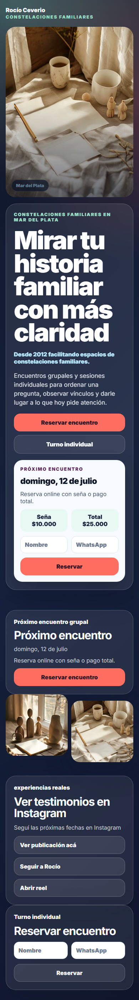
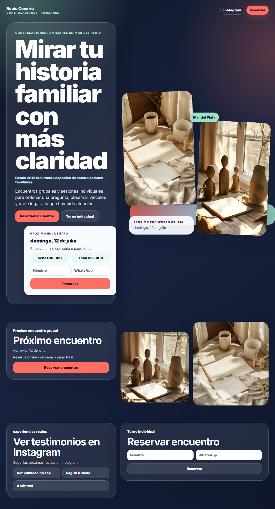
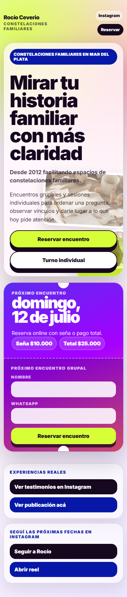
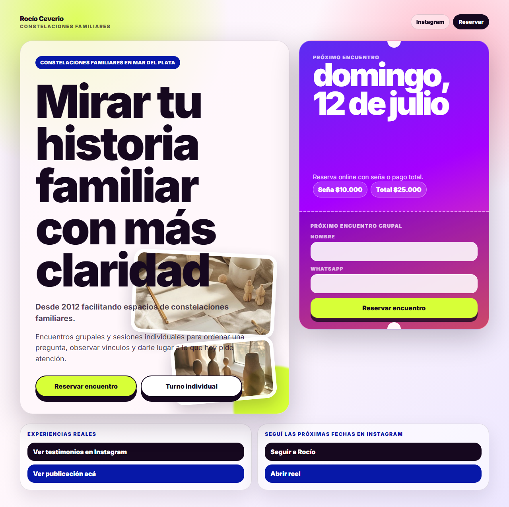
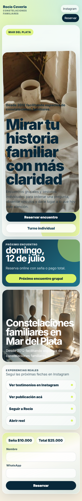
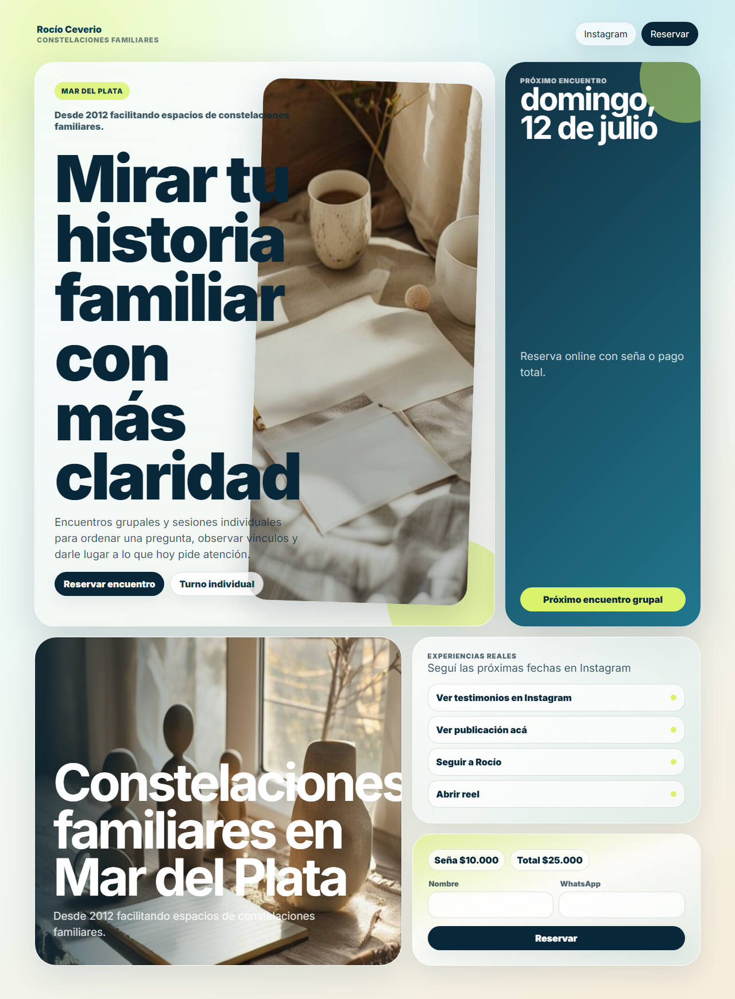
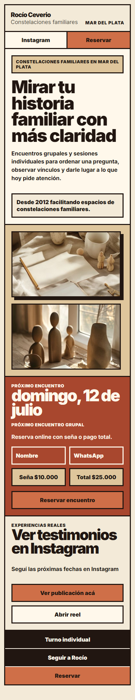
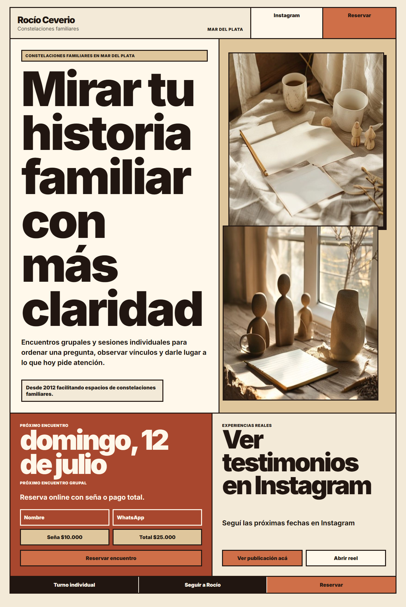
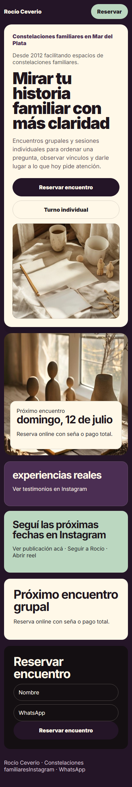
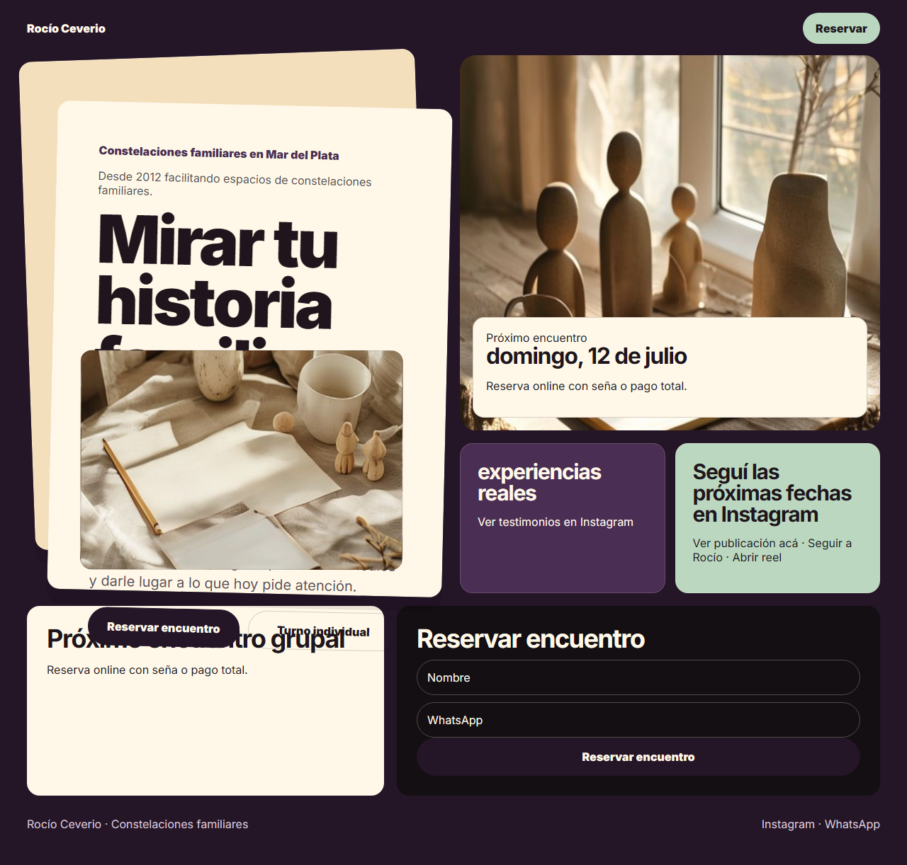

V4: mismas imágenes, mismos textos
Comparación justa: cada opción usa el mismo contenido base y las mismas dos imágenes aceptadas. Solo cambian paleta, layout, escala, composición y ritmo visual.
Contrato: textos originales congelados, imágenes
tactile-table-01 y tactile-table-02, mobile 390px + desktop 1280px, sin overflow horizontal ni errores de consola.A · Gallery wall worker
Composición tipo pared/archivo visual, con paneles asimétricos y paleta ink/plum/rose/mint/sky.
{kind=link}
{kind=link}


B · Split ticket worker
Módulo fuerte de fecha/reserva tipo ticket físico; paleta violeta/azul/coral/amarillo ácido.
{kind=link}
{kind=link}


C · Coastal card worker
Fresca/local con paleta marino/celeste/ácido suave y composición asimétrica.
{kind=link}
{kind=link}


D · Quiet brutalist worker
Bloques planos, bordes fuertes y layout marcado, intentando seguir humano/cálido.
{kind=link}
{kind=link}


E · Paper stack orquestador
Papeles superpuestos, paleta plum/mint, imagen como objeto y reserva como ticket.
{kind=link}
{kind=link}

